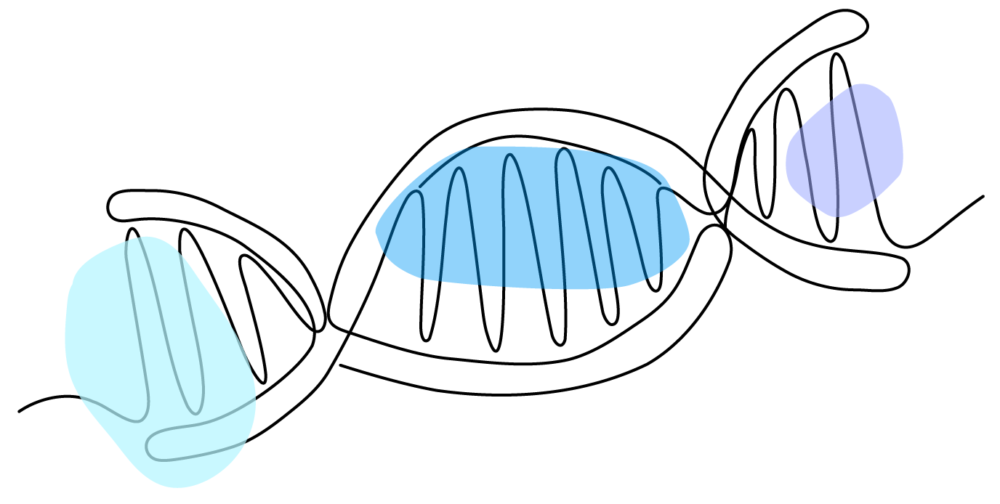
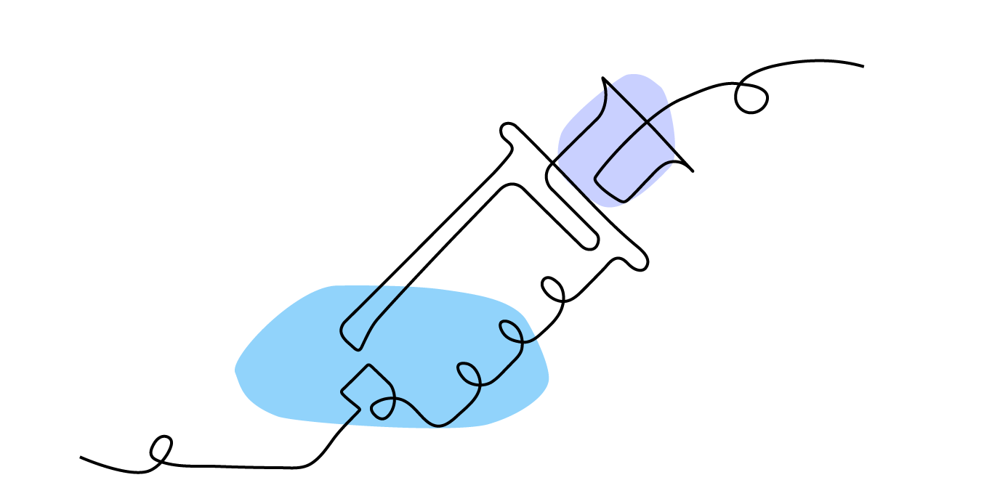
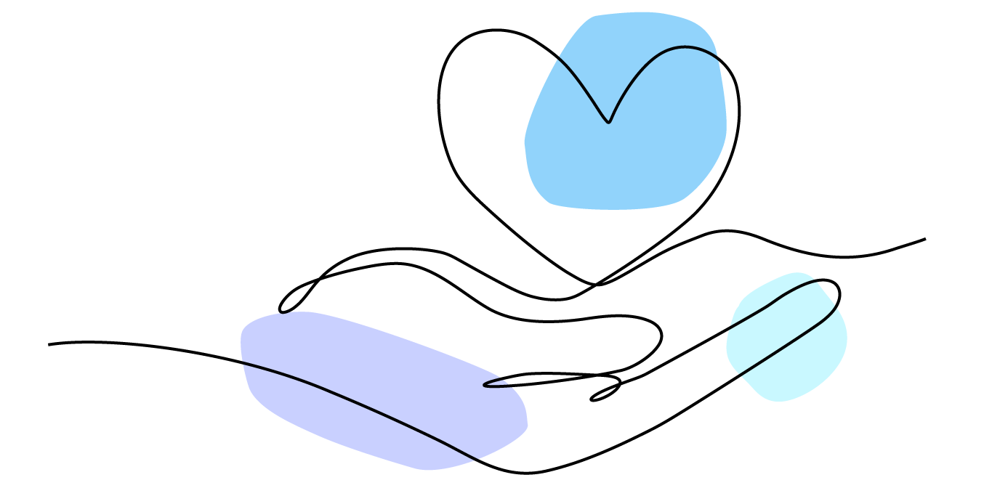

Science Tokyo
Laboratory Medicine
Advancing the Frontiers of Hematologic Cancer Research
Decoding blood cancers. Developing tomorrow's therapies.
Advancing the future of cancer care.
PROFESSOR
Koji Sasaki, MD, PhD
Professor, Department of Laboratory Medicine / Faculty of Medicine, Institute of Science Tokyo
Our research focuses on leukemia and leukemia-related disorders while extending across malignant diseases more broadly. Building on the extensive laboratory data generated daily by the clinical laboratory, we integrate genomic medicine, medical artificial intelligence, and biobanking to develop next-generation systems for diagnosis, prognostication, and patient safety.
Read more → Close ↑
As a cross-disciplinary unit, the clinical laboratory brings together specimens and laboratory data generated across a wide range of clinical services throughout the hospital. This unique perspective enables us to pursue research that transcends traditional disease- and specialty-based boundaries, leading to advances in diagnostics, prognostic modeling, and the quality and safety of patient care.
As a cross-disciplinary unit, the clinical laboratory brings together specimens and laboratory data generated across a wide range of clinical services throughout the hospital. This unique perspective enables us to pursue research that transcends traditional disease- and specialty-based boundaries, leading to advances in diagnostics, prognostic modeling, and the quality and safety of patient care.
Research Key Research Themes
-
01

From Leukemia to Cancer Genomics and Beyond
Advancing diagnostic accuracy, risk stratification, and genomic medicine built on leukemia research
-
02

Next-Generation Patient Safety Systems: Medical AI Built on Laboratory Data
Medical AI built on laboratory data to detect overlooked abnormalities and support patient safety
-
03

Clinical Data Biobank and Collaborative Research Platform
A clinical biobank of residual specimens and data, supporting collaborative research across disciplines
News Latest Updates
- 2024.05 Publication Published a paper in an international journal on the inhibitory effects of a Notch ligand antibody on leukemia cell proliferation
- 2024.04 News Began recruiting graduate students and research fellows for the 2024 academic year. Please see the Japanese page for details
- 2024.03 Publication A paper on a new genotyping method for SARS-CoV-2 variants was published
- 2024.01 Conference Gave an oral presentation at the Annual Meeting of the Japanese Society of Laboratory Medicine